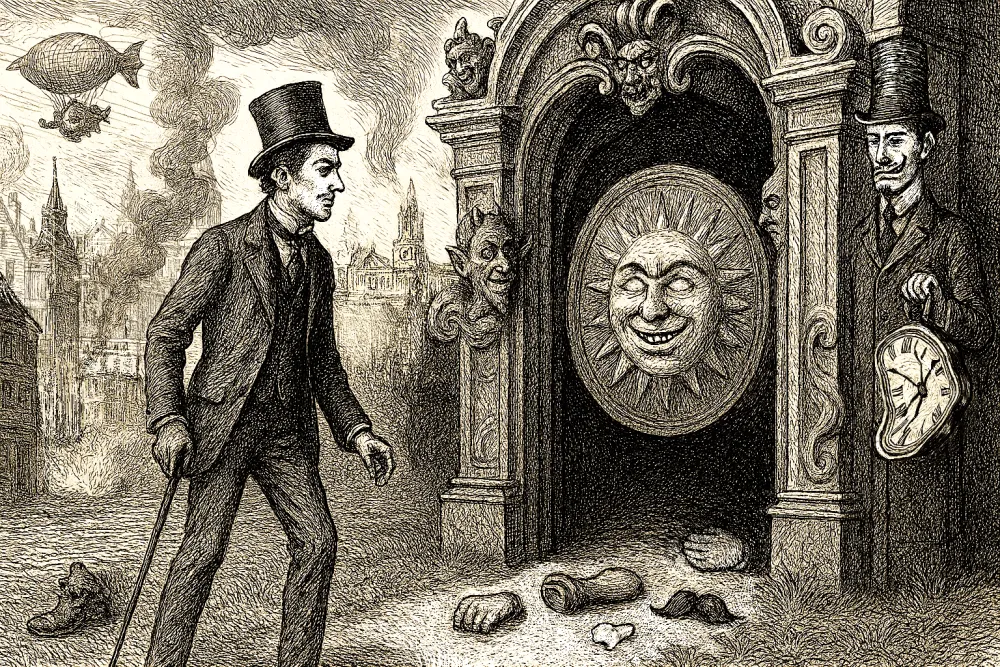
📚【じっくり読み解く】木曜日だった男／チェスタトン
チェスタトンを救った「光」をさがす旅へ。 名作をやわらかく、とことん深掘り。最後に起きたことは何？ 「杯」の意味って？ サタンと戦うのに資格がいるの？ じっくりコトコト読み解きます！

チェスタトンを救った「光」をさがす旅へ。 名作をやわらかく、とことん深掘り。最後に起きたことは何？ 「杯」の意味って？ サタンと戦うのに資格がいるの？ じっくりコトコト読み解きます！
それが結婚よ。 失踪した妻エイミー、追い詰められる夫ニック。デヴィッド・フィンチャーが仕掛けた「結婚」という名の地獄を食らえ。
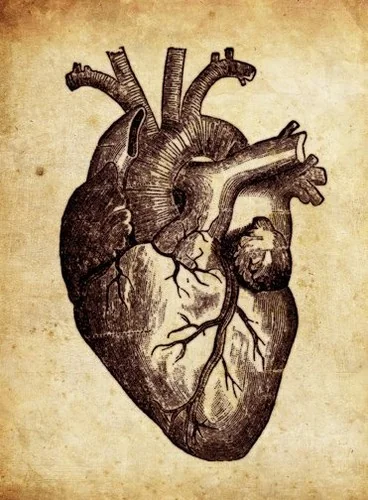
心臓の音が、秘密を暴く。 なぜ語り手は老人の「眼」をあんなに怖がったのか？ 意味不明な夜ごとの儀式、罪悪感のない殺人、そして自白。論文をたよりに、ポーが仕掛けた「良心」の正体に迫る。
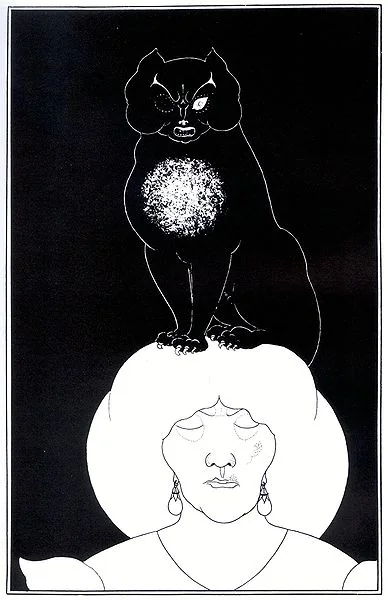
自分を破滅させるからこそ、やる。 涙を流しながら猫を吊るす男、完全犯罪を自ら暴く男。作品の鍵をにぎる「天邪鬼」とは何なのか？ 自分を追いつめる衝動を「良心」と呼んでいいのか、悩みながら読み解く。
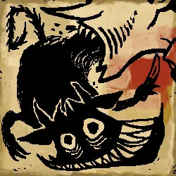
勝利は影に決まっている。 もう一人の自分を追いつめた衝動の正体とは？ 『天邪鬼』の一文で、ずっと悩んでいた謎がついに解けた。善が悪に変身する、ポーの良心シリーズ完結編。
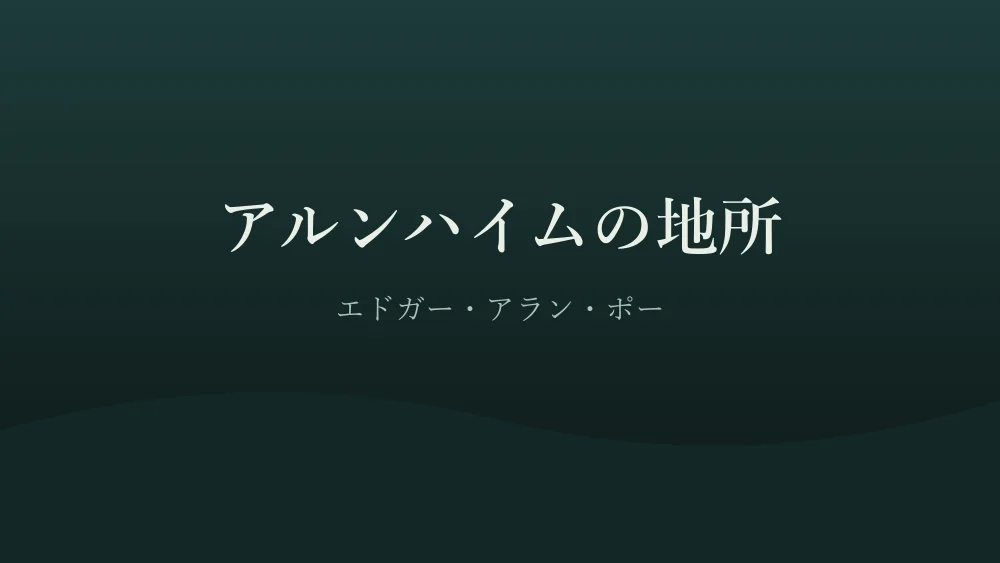
造園家こそ、詩人である。 莫大な財産を手にした青年エリソンが、全力で創り上げた理想の楽園。それはもしかして「死後の世界」？ 乱歩『パノラマ島綺譚』とくらべながら、続編『ランダーの別荘』もあわせて読む。
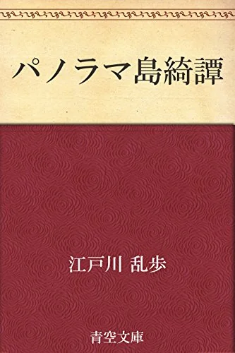
「幻想」は、探偵に終わらされた。 人見廣介が何年も思い描いた夢の島。しつこいほどの描写は、彼の執念そのもの。なのに終盤、探偵の登場で一気に興ざめ……？ 幻想と理性、乱歩の魅力が裏目に出た一作を読む。
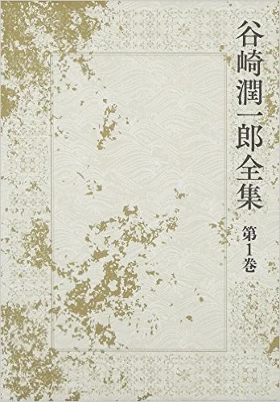
このくらい美しい人間の死体を、見たことがない。 財産をつぎこんだ肉体美の庭園と、金箔に包まれた最期。岡村君は死によって自分の芸術を完成させたのか？ レッシングの芸術論とくらべながら、『パノラマ島綺譚』への影響を探る。
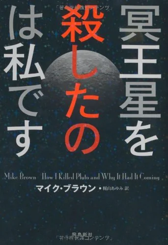
「冥王星は死にました」 幻の第10惑星を見つけた天文学者は、その星を道連れに冥王星を惑星の座から引きずり下ろした。宇宙は何も変わっていないのに、なぜ世界は変わるのか？ 描き直されつづける「地図」の話。
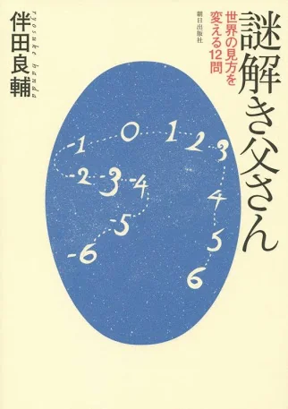
答えがわかっても、やっぱり不思議！ マッチ棒のお父さんが出す、手品のような12の問題。無限ホテル、一筆書き、ありえない立体……。数式なしで楽しめる問題の裏にある数学の話題を、ひとつずつ調べてみた。
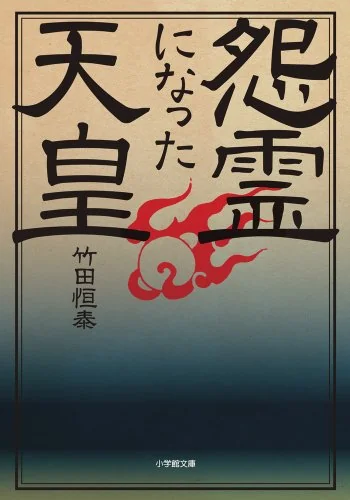
怨霊は、生者がつくりだす。 崇徳天皇を中心に、天皇が「怨霊」となるいきさつをたどる一冊。「怖いもの」を怖がる心が、どれほど日本人の礎を築いてきたのか。南朝の末裔の話にもびっくり。
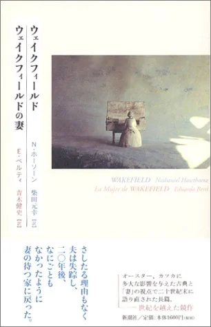
自分がいなくても、世界は回る。 ある日ふらりと家を出て、すぐ近くに住みつづけた男。一度離れたら、戻るに戻れない。愛情の亀裂は、あっという間にふたたび閉じてしまう――ホーソーンの不思議な短篇。
ここからは出られません。 ウォール街のエリートにして殺人鬼、パトリック・ベイトマン。ブランド名の羅列と生々しい殺人、なのにどこかコメディじみている。頭がおかしいのは、はたして主人公だけだろうか？
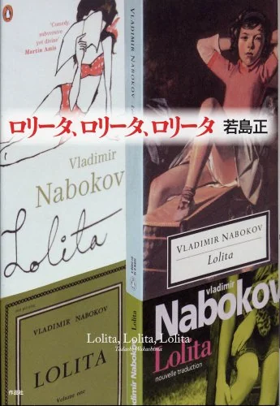
「霜の針」を、愛おしい手つきで拾い上げる。 ナボコフ『ロリータ』を再読するときのヒントになる一冊の読書ノート。見えないロリータ探し、Cの氾濫、クィルティの影。美しいと評判の書き出しは、本当に手放しで褒めていいのか？